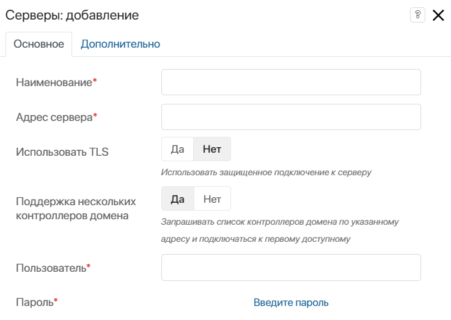
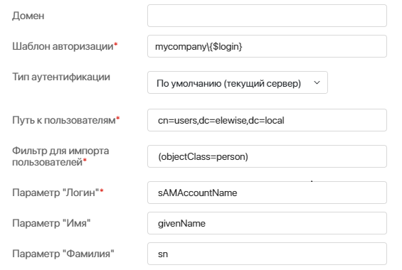
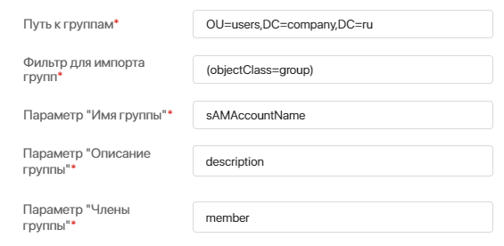
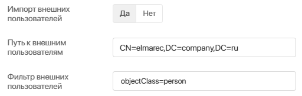
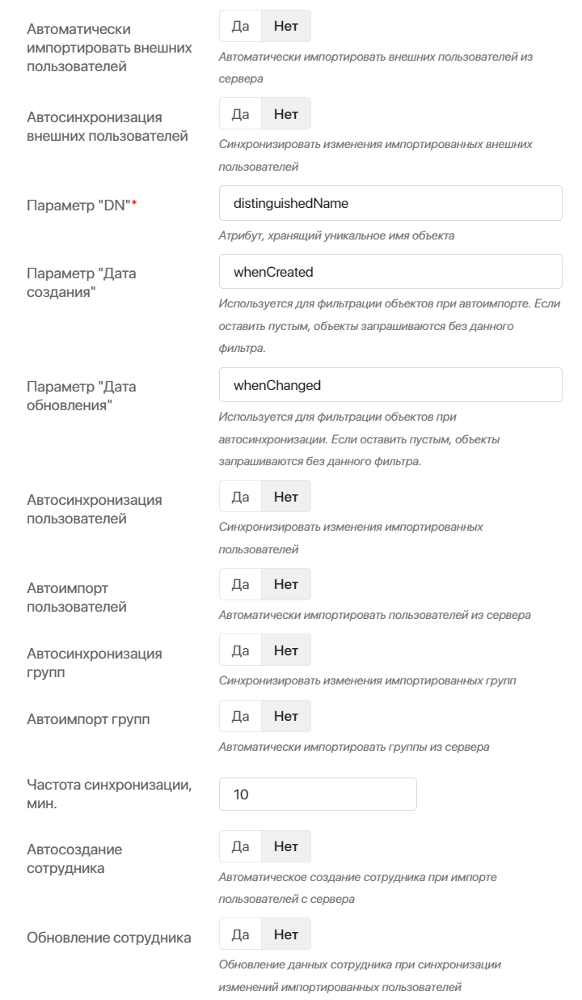
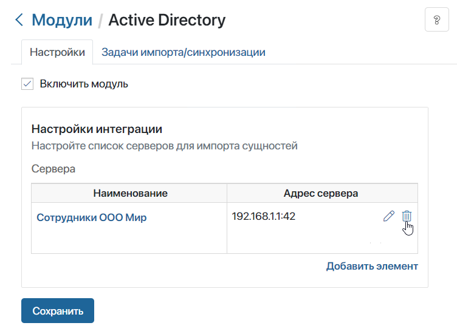

Интеграция с Active Directory/LDAP позволяет импортировать пользователей с их логинами из другой корпоративной системы в ELMA365. При этом в базе ELMA365 могут одновременно находиться как импортированные таким образом пользователи, так и добавленные вручную.
Принцип работы
Администратор системы подключает AD/LDAP к ELMA365 по адресу сервера, своему логину и паролю. При настройке он указывает, какие поля из двух систем сопоставлять друг с другом и как часто синхронизировать базу данных. Сервер добавляется в список интеграций.
Пользователей затем можно импортировать непосредственно в ELMA365, после чего эти сотрудники смогут авторизоваться, используя свой логин и пароль от той системы, из которой были импортированы.
Таким образом можно настроить интеграцию с несколькими системами.
Настройка
Чтобы настроить интеграцию с AD/LDAP, перейдите в Администрирование > Модули.
Выберите Active Directory или LDAP и поставьте флажок Включить модуль. Чтобы подключить новый сервер, на вкладке Настройки нажмите Добавить элемент.
Появится вкладка Основное с параметрами, которое можно условно поделить на пять блоков: Подключение к серверу, Подключение и импорт пользователей, Импорт групп, Импорт внешних пользователей и Автоматические настройки.
Рассмотрим подробнее настройку каждого блока.
Подключение к серверу
Настройте подключение ELMA365 к серверу AD/LDAP.

- Наименование* — укажите, как данная интеграция будет называться в общем списке интеграций;
- Адрес сервера* — укажите IP-адрес, по которому производится обращение к серверу, а также порт.
Если для доступа к серверу необходимо указать порт, отличный от порта LDAP, по умолчанию используется (389), его требуется указать в этом поле через двоеточие. Например, 192.168.1.1:42 для случая, когда на LDAP‑сервере с IP‑адресом 192.168.1.1 используется порт 42;
- Использовать TLS — выберите Да для использования защищённого подключения к серверу;
- Поддержка нескольких контроллеров домена — выберите Да, если вы используете отказоустойчивый кластер из нескольких контроллеров домена. При активной опции из ELMA365 на указанный адрес сервера поступит запрос списка IP‑адресов. Подключение произойдёт по первому доступному IP‑адресу;
Пример настройки подключения к кластеру из нескольких контроллеров
Предположим, что у вас настроен кластер из контроллеров ad1.mycompany.ru, ad2.mycompany.ru и ad3.mycompany.ru. Чтобы автоматически подключать систему к первому доступному контроллеру, при настройке модуля AD/LDAP необходимо указать следующие параметры:
|
- Пользователь* — укажите имя пользователя, используемое для авторизации на LDAP-сервере;
- Пароль* — укажите пароль к этой учётной записи.
Подключение и импорт пользователей
В настройках модуля AD поля для подключения и импорта пользователей заполнены автоматически, но для LDAP их нужно заполнить вручную.

- Домен — если вы укажете домен, для пользователя будет доступна авторизация по логину с доменом.
- Шаблон авторизации* — укажите доменное имя, по которому производится обращение к серверу.
При использовании поля sAMAccountName в качестве источника поля Логин доступны следующие варианты авторизации:
Вариант 1 |
Вариант 2 |
Вариант 3 |
Вариант 4 |
|
Логин |
login |
login@mycompany.com |
mycompany\login |
mycompany.com\login |
Домен |
mycompany.com |
mycompany |
mycompany.com |
|
Шаблон авторизации |
mycompany\{$login} |
mycompany\{$login} |
mycompany\{$login} |
mycompany\{$login} |
Например, если в поле Домен установлено значение elma.com, а в поле Шаблон авторизации — elma\{$login}, то на странице авторизации пользователь может ввести логин в формате ivanov@elma.com. Из этой строки выделяется логин ivanov, на основании которого заполняется шаблон авторизации, т. е. на сервер авторизации уйдёт запрос с логином elma\ivanov.
Пользователь может войти в систему по логину при любых настройках сервера, так как логин автоматически подставляется в шаблон авторизации. Однако если в системе настроены интеграции с несколькими серверами AD/LDAP, для пользователей с одинаковыми логинами вход только по логину недоступен. В этом случае нужно вводить логин вместе с доменом или вставлять его в шаблон авторизации.
Кроме того, доступен вариант, когда в качестве источника поля Логин выступает поле userPrincipalName (формат хранения логина — username@domain.com, длина строки не ограничена). В этом случае настройки интеграции задаются следующим образом:
- домен — mycompany.com;
- шаблон авторизации — {$login};
- пользователь — login@mycompany.com;
- строка логина при авторизации — login@mycompany.com.
Начало внимание
Импортируемому пользователю не требуется выдавать дополнительные права, достаточно, чтобы он был пользователем домена.
Конец внимание
- Тип аутентификации — указанное в поле значение определяет, каким способом импортированные пользователи могут авторизоваться в ELMA365 или на внешнем портале:
- По умолчанию (текущий сервер) — пользователи будут входить с помощью логина и пароля из AD/LDAP;
- SAML — если у вас настроена интеграция с SAML, вы можете выбрать этот вариант. Тогда доступ с помощью логина и пароля из AD/LDAP будет недоступен. Пользователи будут входить в ELMA365 или на внешний портал с помощью провайдера SAML. Один сервер SAML можно использовать в нескольких серверах AD/LDAP.
- Путь к пользователям* — путь к пользователям указывается при помощи синтаксиса строк подключения ADSI:
- OU — Organization Unit, организационный блок, который содержит такие объекты, как пользователи, контакты, группы и др.;
- CN — Common Name, общее имя. Пользователь, контакт, группа или другой объект, который, как правило, не имеет дочерних объектов;
- DC — Domain Component, компонент доменного имени.
Например, чтобы получить пользователей корневой группы Users домена company.com, используется путь cn=Users, dc=company, dc=com.
начало внимание
Если в пути к пользователям есть начальные или конечные пробелы или спецсимволы , \ # + < > ; " =, перед ними необходимо ставить обратную косую черту «\».
конец внимание
Пример пути к пользователям:
Правильно |
Неправильно |
OU=ouTest \+,OU=your\#Company,DC=testsmir,DC=local |
OU=ouTest +,OU=yourCompany,DC=testsmir,DC=local |
- Фильтр для импорта пользователей* — фильтр, который используется в запросах к AD/LDAP-серверу при импорте пользователей.
Далее необходимо настроить соответствие между полями ELMA365 и AD/LDAP:
- Параметр "Логин" — укажите поле, в котором на вашем AD/LDAP-сервере хранится логин пользователя, например, sAMAccountName. Пользователь, импортированный из LDAP, будет входить в ELMA365 под этим именем;
- Параметр "Имя" — укажите поле, в котором на вашем AD/LDAP-сервере хранится имя пользователя, например, name;
Аналогичным образом настройте параметры Фамилия, Отчество, Рабочий телефон, Мобильный телефон, Дата рождения, Дата приёма, Отображаемая должность, E-mail, Статус блокировки, Дополнительные данные.
Подробнее о том, как перенести внутренних пользователей в ELMA365, читайте в статье «Импорт внутренних пользователей из AD/LDAP».
Импорт групп
Аналогично настройкам, заданным для импорта пользователей, укажите значения для полей Путь к группам и Фильтр для импорта. В параметрах Имя группы, Описание группы и Члены группы укажите поля, в которых на вашем AD/LDAP-сервере хранятся значения соответствующих свойств.

Подробнее о том, как перенести группы в ELMA365 и распределить по ним загруженных внутренних пользователей, читайте в статье «Импорт групп из AD/LDAP».
Импорт внешних пользователей
Чтобы импортированные пользователи могли взаимодействовать только с внешним порталом, включите опцию Импорт внешних пользователей.
Аналогично настройкам, заданным для импорта пользователей, укажите значения для полей Путь к внешним пользователям и Фильтр внешних пользователей. Обратите внимание, если вы импортируете внутренних и внешних пользователей одновременно, фильтры не должны совпадать.

Подробнее о том, как перенести в ELMA365 пользователей портала, читайте в статье «Импорт внешних пользователей из AD/LDAP».
Автоматические настройки

Включите или отключите автоматическую синхронизацию и автоматический импорт внешних и внутренних пользователей, а также групп. При включённом автоимпорте новые пользователи AD/LDAP будут сразу же добавлены в ELMA365.
Важно: при автоматическом импорте или автоматической синхронизации может произойти обновление существующих пользователей ELMA365, которые были приглашены по email. Это происходит, если электронная почта внутреннего пользователя совпала с почтой импортируемого. В этом случае сотрудник не сможет авторизоваться в ELMA365 по почте и паролю, но сможет войти в систему по учётным данным из AD/LDAP.
Каждому объекту автоматически присваивается уникальный идентификатор: ObjectGUID в AD и entryID в LDAP. Благодаря им все изменения, внесённые в учётные записи или группы, при синхронизации будут переноситься в ELMA365. Это может быть блокировка пользователей, изменение фамилии или других персональных данных.
- Параметр "DN"* — укажите название атрибута, в котором на вашем AD/LDAP-сервере хранится полный путь к пользоватю;
- Параметр "Дата создания" — при включённом автоимпорте вы можете настроить фильтрацию импортируемых объектов. Тогда учётные записи, созданные ранее указанной даты, не будут импортироваться в ELMA365;
- Параметр "Дата обновления" — при включённой автосинхронизации вы можете настроить фильтрацию обновляемых объектов. Тогда обновлённые ранее указанной даты учётные записи не будут изменены в ELMA365;
- Частота синхронизации, мин. — установите частоту автоматической синхронизации в минутах, исходя из регламента вашей компании. Рекомендуем устанавливать максимально возможную частоту синхронизации, чтобы минимизировать нагрузку на систему. Расчёт частоты синхронизации для минимальной нагрузки:
- без использования фильтра whenChanged: 60 минут на 1000 пользователей;
- с использованием фильтра whenChanged: 30 минут на 1000 пользователей.
- Автосоздание сотрудника — если опция включена, при импорте пользователя автоматически создаётся элемент в системном справочнике Сотрудники;
- Обновление сотрудника — если опция включена, при импорте и синхронизации пользователей данные из AD/LDAP записываются в системный справочник Сотрудники. Для работы опции также нужно включить настройку Автосинхронизация пользователей. Атрибуты AD/LDAP сопоставляются и полями приложения Сотрудники на вкладке Дополнительно. Подробнее читайте в статье «Запись информации о сотрудниках из Active Directory/LDAP».
Для завершения настройки нажмите Сохранить. После этого происходит проверка подключения ELMA365 к серверу AD/LDAP. Если соединение с сервером не установлено, вверху страницы вы увидите сообщение об ошибке с неверно заданным параметром.
Удаление сервера
Чтобы удалить сервер, в настройках модуля AD/LDAP нажмите на значок корзины справа от адреса сервера и подтвердите действие.

Обратите внимание, при удалении сервера в системе происходит проверка на наличие импортированных пользователей. Если пользователи были перенесены с данного сервера, его удаление невозможно.